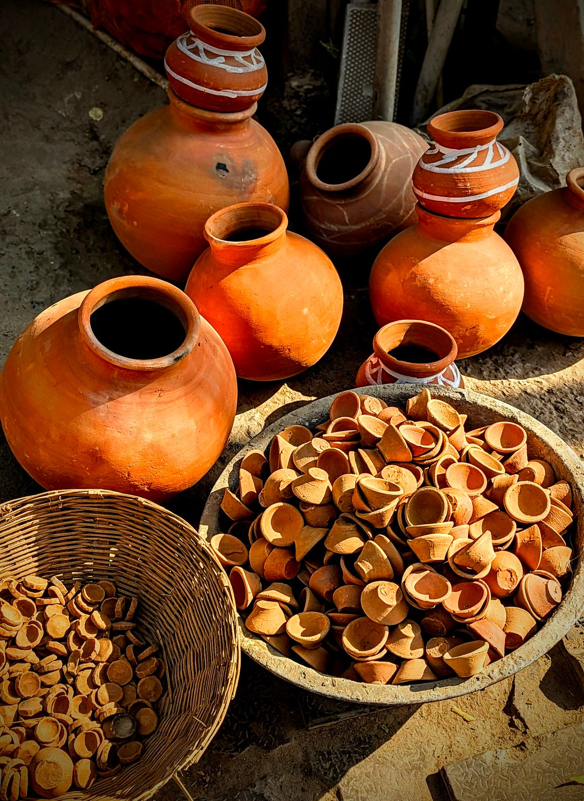

Four hundred matkas for a desert camp
The ask. A tented camp on the Bhuj–Nakhatrana road needed 400 unglazed 10-litre matkas before the winter season — one at every tent, spares for the kitchen — delivered by mid-November 2025.
What I did. A matka is the slowest thing I throw: 3.5 kilos of clay, twelve a day at the wheel, seven days of drying because the base is thick. I threw 432 — the 8% the kiln book always takes — across 36 wheel days, and fired 18 kiln loads through September and October. The camp's owner drove down twice to watch his pots come out of the kiln.
The outcome. 401 sound matkas arrived on 12 November, packed in straw — one more than ordered, which went to the camp kitchen as it should. On a May afternoon the following summer, the water in them measured about four degrees below the shade temperature. The camp ordered 60 replacements and a set of kulhads for the season after.
“Four hundred matkas, and the water in every one of them is cold at three in the afternoon. Salim told us 401 would arrive sound and one would be his gift for the kitchen. He was right to the pot.”

- Ordered
- 400 matkas
- Thrown
- 432
- Clay
- 1,512 kg
- Kiln loads
- 18
- Delivered sound
- 401
- Price
- ₹450 each · ₹1,80,000